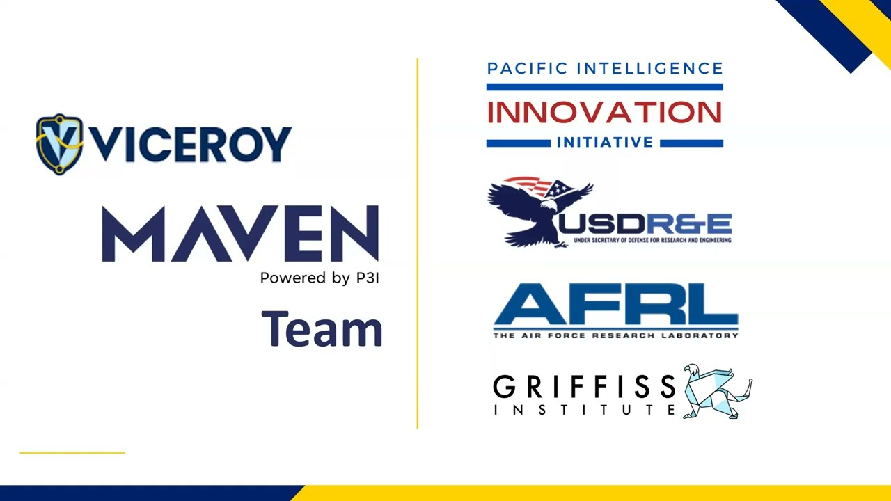

Multimodal AI on OSINT &
Cyber Ops (VICEROY MAVEN)
Designed zero-trust inference pipelines for image-to-location geolocation. Focused on privacy-preserving vision models and LLM-based intel synthesis.
Cyber Ops
LLM & Vision/Language Inference
Security & Privacy